Anime Scenes
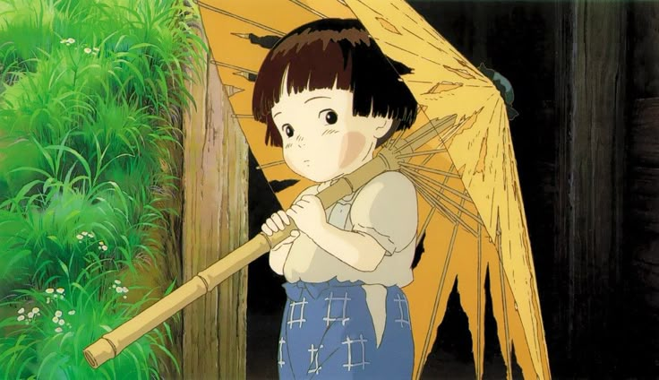
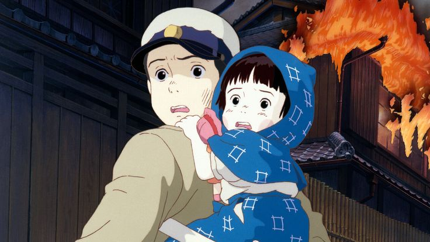
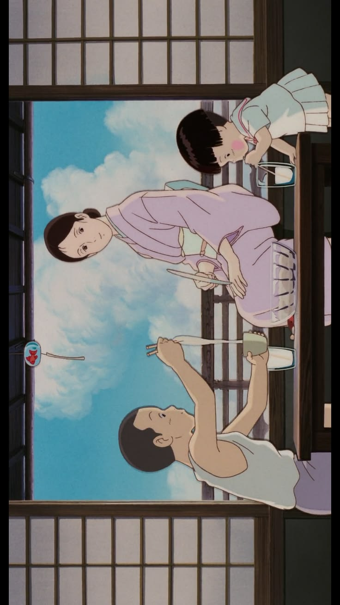
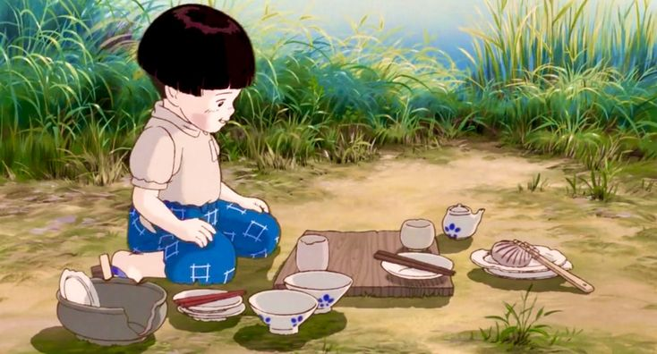
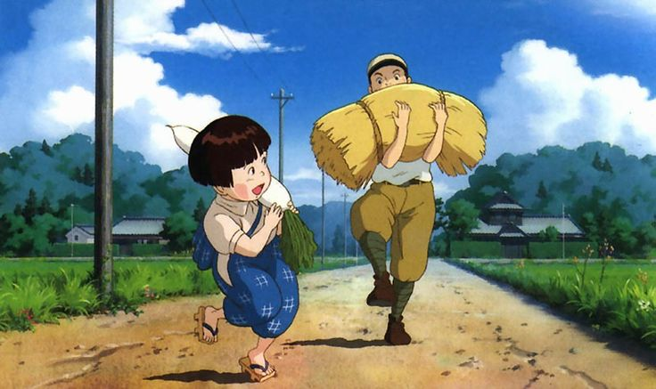
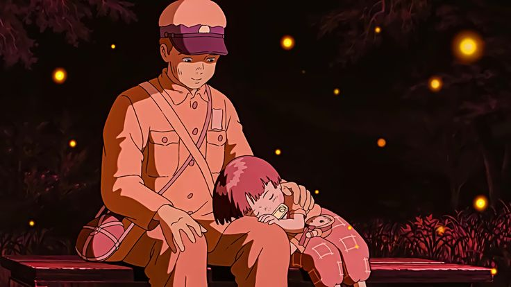
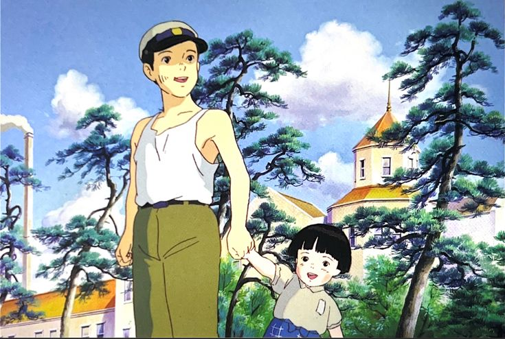
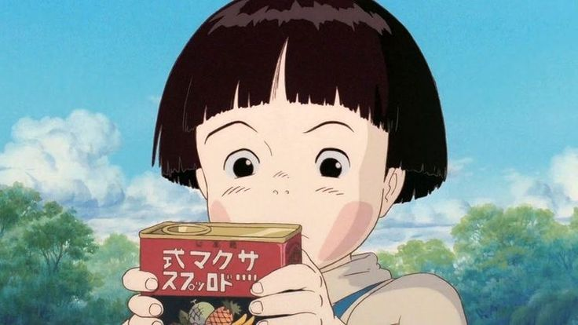
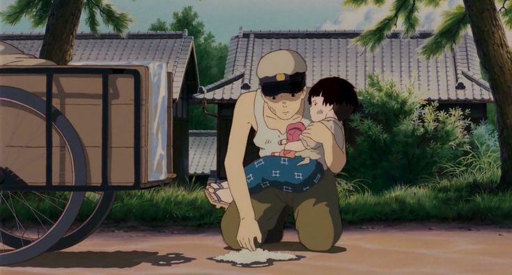
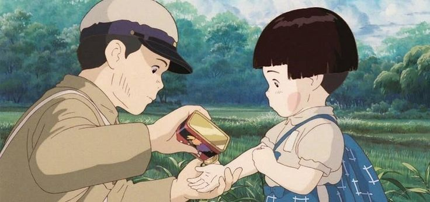
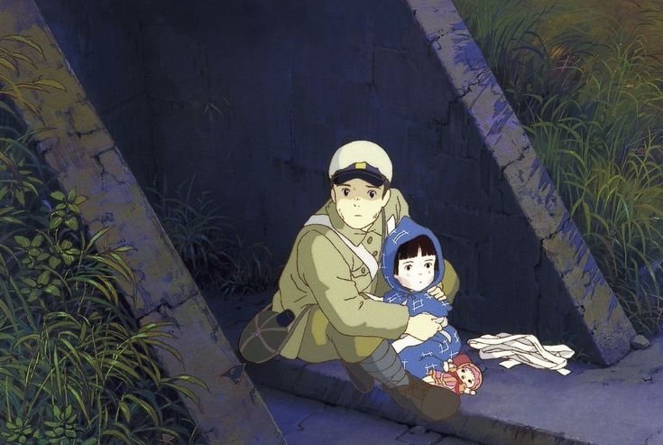
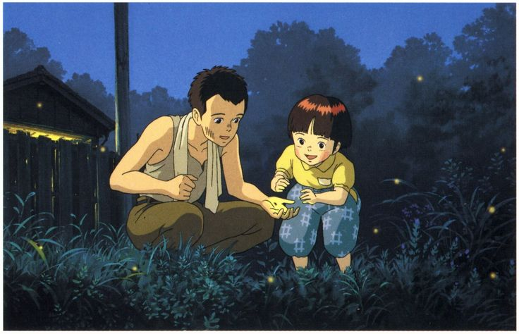
“Why do fireflies have to die so soon?”
Anime Studio: Studio Ghibli
Director: Isao Takahata
Producer: Toru Hara
Distributor: Toho
Rating: ★ 8.5 / 10
Source: Short Story
Release Date: April 16, 1988
Duration: 1h 29min
Music by: Michio Mamiya
Status: Movie
Country: Japan
Language: Japanese
Author: Akiyuki Nosaka
Awards: Blue Ribbon Special Award